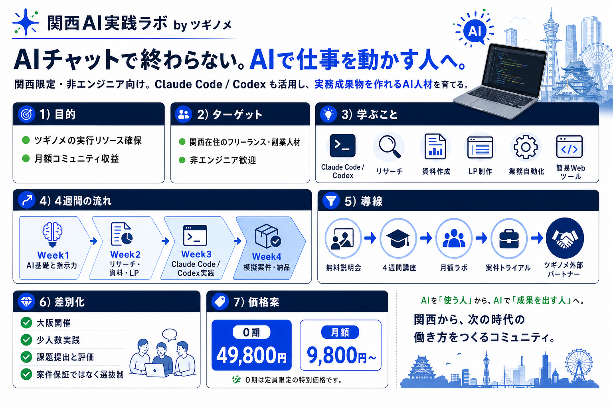

事業概要
スクール単体で大きく儲けるより、ツギノメの採用・教育・評価・外部パートナー化の仕組みとして育てる。
目的
ツギノメの実行リソース確保と、月額ラボによるサブスク収入の構築。
人材プール継続課金対象
関西在住のフリーランス・副業人材。非エンジニア歓迎。ただしAIチャットではなく、AIに実務を動かさせる層。
関西限定非エンジニア法人導線
法人向けはスクール内で安売りせず、AI活用・業務改善・事業推進としてツギノメ本体へ接続。
法人はツギノメへ一枚で見る全体像
Slack共有用に作成した事業概要ビジュアル。

4週間カリキュラム
コードを学ぶ講座ではなく、AIに指示して成果物を作り、確認・修正・納品する実務講座。
AI基礎と指示力
AIチャットとAIで仕事を動かす使い方の違い。指示、確認、修正依頼、品質チェック。
実行ログ業務テーマ案リサーチ・資料・LP
競合調査、営業リスト、LP構成、SNS/記事原稿、提案資料アウトライン。
調査表LPワイヤーClaude Code / Codex
非エンジニアでも、小さなLP・業務ツール・診断フォーム・CSV整形をAIに作らせる。
簡易Webツール模擬案件・納品
要件整理、作業分解、成果物チェック、報連相、修正対応。ツギノメ案件トライアルへ。
模擬納品評価受講後の導線
学習で終わらせず、案件候補化までつなげる。
無料説明会
大阪で接点づくり
4週間講座
課題提出で実力確認
月額ラボ
継続学習と関係維持
案件トライアル
選抜制で模擬/実案件へ
外部パートナー
ツギノメの実行リソース化
競合比較表
競合は全国オンライン・大量コンテンツ・副業訴求が中心。ツギノメは関西リアル×少人数実践×案件トライアルで差別化。
| サービス | 主な対象 | 形式/地域 | 価格感 | 主な内容 | 案件/実務接続 | ツギノメ視点 |
|---|---|---|---|---|---|---|
| DMM 生成AI CAMP | 生成AIを幅広く学びたい個人/ビジネス職 | オンライン、月額学び放題 | 月額16,280円税込の記載 | ChatGPT、Dify、画像/動画、デザイン、エンジニア、Claude Code等 | 実案件/コンペ訴求あり | 量と価格が強い。地域密着・少人数評価で差別化。 |
| SHIFT AI | AI副業/業務改善/コミュニティ志向 | オンライン＋全国リアルイベント | 月払い/年払い/生涯プラン | 業務改善、副業、目的別AIツール、ウェビナー | 収益化・案件化の情報/交流訴求 | コミュニティが強い。関西限定と案件候補化を尖らせる。 |
| SAMURAI ENGINEER 生成AI | 個別指導でAI活用/開発を学びたい人 | オンライン、マンツーマン | 4週間198,000円等の記載 | 生成AI基礎、業務改善、Claude Code、AI協働開発 | 副業/収入アップ訴求 | Claude Code領域も競合あり。価格・地域・実務課題で勝つ。 |
| Aidemy / キカガク | AI/データサイエンスを体系的に学びたい社会人 | オンライン/動画学習 | 高単価・給付金系 | Python、AI、データ分析、DX、機械学習 | 転職/リスキリング寄り | 学術/DSではなく、非エンジニアの実務成果物に寄せる。 |
| Winスクール | 通学でビジネスソフト×AIを学びたい社会人 | 全国教室＋オンライン | 講座別 | Copilot、Office、業務効率化、個人レッスン | 資格/ビジネススキル寄り | 通学ニーズは存在。大阪開催は差別化に使える。 |
| Udemy / Zenn系 | 独学したい個人 | オンライン教材 | 低価格〜無料 | Claude Code、Codex、AI駆動開発の入門 | 弱い/なし | 価格では勝たず、添削・オフライン・案件候補化で価値を出す。 |
| 関西AI実践ラボ | 関西の非エンジニア系フリーランス/副業人材 | 大阪開催＋オンライン補助 | 0期49,800円 / 月額9,800円〜案 | Claude Code / Codex、リサーチ、資料、LP、業務自動化、簡易Webツール | 選抜制のツギノメ案件トライアル | 関西リアル×実務課題×人材プール化が勝ち筋。 |
DMM/SHIFT AIが「全国オンラインで大量に学ぶ場所」なら、
ツギノメは「関西で会って、作って、案件候補になる場所」。
名前はAIでシンプルに
講座名には「AIエージェント」を入れず、関西AI実践ラボとして入口を広げる。
中身は次世代にする
単なるAIチャット講座ではなく、Claude Code / Codexまで扱う。
保証ではなく選抜制
案件保証はしない。課題品質・納期・報連相を見てトライアル候補にする。
0期立ち上げプラン
まずは10名規模で検証し、講座品質・受講生ニーズ・案件候補化の精度を確認する。
募集条件
49,800円
0期モニター価格 / 定員10名 / 関西在住者優先
月額ラボ
9,800円〜
月次勉強会、課題添削、案件トライアル案内、メンバー交流。
初期KPI
説明会20名、申込10名、完走8名、案件トライアル候補3名、月額加入5名。